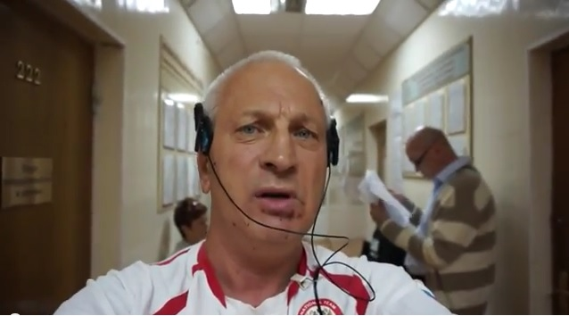

Рассказ о зверствах руководства «ЛНР»
Очередной «прокол» при получении комментария очевидца.
Журналист Сергей Рулев, которого зимой избили «антимайдановцы» во время съемки сюжета о Топазе, попросив комментарий о «зверствах киевской хунты», услышал рассказ о преступлениях так называемой ЛНР — Луганской народной республики.
При попытке взять комментарий у украинского беженца в Ростове-на-Дону, Рулев услышал историю гражданина России, который уже 15 лет проживает в Украине.
Рулев снимал сюжет в Ростове-на-Дону.За комментарием он обратился к беженцу из Украины, который оказался гражданином России, проживавшей последние 15 лет в Украине.
Очевидец рассказал о том, как в конце мая в Луганске представители т.н. ЛНР отобрали у него автомобиль, деньги, документы и посадили под арест.
«В настоящее время на этом автомобиле ездит председатель верховного совета самопровозглашенной ЛНР Корякин Алексей – тот самый миротворец, который в Минске подписывал документы о признании так называемой Новороссии, а еще правильнее сказать Лугандонии», — заявил беженец.
Несмотря на потерю всего имущества, в предоставлении убежища в Ростове-на-Дону гражданину России отказали.

Напомним, что недавно бывшая российская телеведущая рассказала в прямом эфире РБК правду об Украине.
Posted On: 2014-10-16T21:00:00
Content Date: 2014-10-16
Download Date: 2021-07-16
Document ID: L0C04FH9J